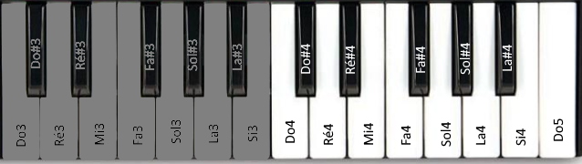

Apprentissage de la lecture des notes au clavier
Nombre de Notes
20
Nombre d'Octave (Tessiture C3<->C5)
1
Nombre de notes a afficher
4
Type de notes
Notes Blanches
Notes blanches et Altérations
--PLAY!--
